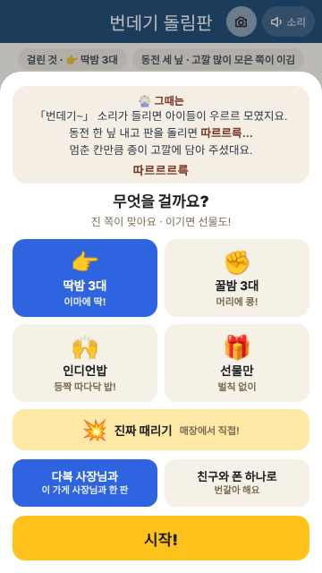
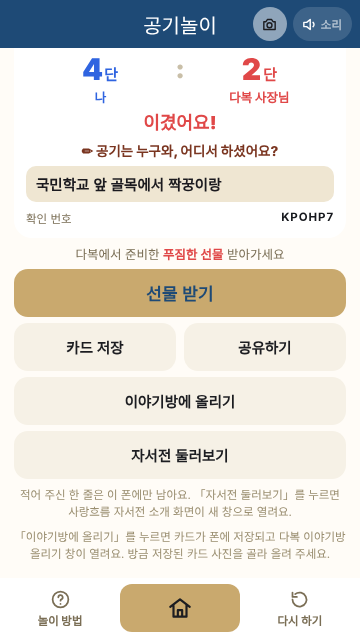
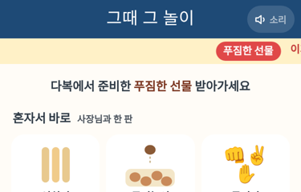
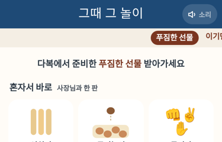

| 칸 | 값 |
|---|---|
| 발신 | 그때 그 놀이 이사 |
| 수신 | 대표 황규찬 |
| 참조 | 사랑흐름 총괄 (자서전 담당 겸함) |
| 회신 요청 | 있음 (5장 판단 둘) |
| 회신 받을 곳 | 이 방 대화 |
| 회신 파일 이름 | 해당 없음 |
| 회신 기한 | 정하지 않음 |
앞 문서: 그때그놀이-065 · 사랑흐름-놀이-003 · 대표 승인 2026-11-25 14:51 「진행해 봅시다」
1시작 전 창 · 결과 카드 완료 · 시험판


- 한 줄은 이 폰에만 적어 둬요(자서전 쪽이 정한 꼴 lfNoriMemo · 50개까지 · 같은 카드에서 고치면 덮어씀). 서버로 보내지 않아요.
- 「자서전 둘러보기」는 한 줄을 적었을 때만 보이고, www.loveflow.ai.kr/memoir/ 소개 화면을 새 창으로 열어요. 결제 권유 문구는 넣지 않았어요(v0.2 6장 6).
- 점검: 놀이 22가지 모두 「그때는」 칸 · 375×667 · 360×640 에서 「시작!」 단추가 화면 안 · 카드 저장 · 자서전 둘러보기 동작 · 오류 0.
2놀이별 「그때 이야기」 글 완료 · 시험판
널리 알려진 것만 썼고, 동네마다 달랐던 것은 여쭙는 말로 돌렸어요. 고칠 글은 놀이 이름과 함께 한 줄로 알려 주세요.
| 놀이 | 시작 전 「그때는」 · 소리 · 여쭙는 말 | 결과 카드 물음 · 닿는 자서전 이야기 |
|---|---|---|
| 🪨 공기놀이 | 작은 돌 다섯 알이면 하루가 금방 갔지요. 마루 한쪽이나 교실 뒤에 쪼그려 앉아 매끈한 돌 고르는 것부터가 놀이였어요. 한 알 · 두 알 · 세 알… 공깃돌은 주로 어디서 고르셨어요? | 공기는 누구와, 어디서 하셨어요? 자서전 2 · 곁의 사람 |
| 🪶 제기차기 | 구멍 난 쇠붙이에 종이나 비닐을 꽂아 손수 만든 제기. 설 무렵이면 골목마다 숫자 세는 소리가 들렸지요. 하나 · 둘 · 셋… 제기는 무엇으로 만드셨어요? | 제기는 누가 만들어 주셨어요? 자서전 2 · 곁의 사람 |
| 🌸 무궁화 꽃이 피었습니다 | 술래가 벽에 얼굴을 대고 외치는 동안 살금살금, 돌아보는 순간 얼음이 되어야 했지요. 무궁화 꽃이 피었습니다! 술래를 자주 하셨어요, 아니면 잘 피하셨어요? | 무궁화 꽃이 피었습니다, 어느 골목에서 하셨어요? 자서전 1 · 어린 날 · 골목 |
| 🎡 번데기 돌림판 | 「번데기~」 소리가 들리면 아이들이 우르르 모였지요. 동전 한 닢 내고 판을 돌리면 따르르륵… 멈춘 칸만큼 종이 고깔에 담아 주셨대요. 따르르르륵 판에 적힌 글씨는 동네마다 달랐다고 해요. 기억나시는 칸이 있으세요? | 번데기 아저씨는 어느 골목에 오셨어요? 자서전 1 · 어린 날 · 골목 |
| 🪵 윷놀이 | 설날이면 멍석을 깔고 온 식구가 윷을 던졌지요. 「윷이야!」 「모야!」 소리에 집 안이 들썩였어요. 윷이야! 모야! 윷놀이 하면 누가 먼저 떠오르세요? | 설날 윷놀이는 누구와 하셨어요? 자서전 2 · 곁의 사람 |
| 🟥 딱지치기 | 달력이나 공책 종이를 접어 만든 딱지를 내리쳐 뒤집으면 내 것이 되지요. 두꺼운 딱지 하나가 보물이었어요. 팍! 딱지는 무슨 종이로 접으셨어요? | 딱지를 제일 많이 따 본 날, 기억나세요? 자서전 1 · 어린 날 · 골목 |
| ⭐ 동그란 딱지 | 그림이 그려진 동그란 딱지를 문방구에서 사 모았지요. 별이나 숫자를 대 보고 센 쪽이 가져갔어요. 짝! 학교 앞 문방구, 어떤 곳이었어요? | 학교 앞 문방구에서 제일 자주 산 건 뭐였어요? 자서전 1 · 어린 날 · 골목 |
| 🔵 구슬치기 | 흙바닥에 금을 긋고 구슬을 튕겨 맞히면 내 구슬이 되지요. 손톱 밑이 까매지도록 놀았어요. 딱! 아끼던 구슬이 있으셨어요? | 구슬치기 하던 골목은 어디였어요? 자서전 1 · 어린 날 · 골목 |
| ⚫ 오목 | 바둑판과 바둑돌만 있으면 둘이 마주 앉아 한참을 두었지요. 바둑은 몰라도 오목은 누구나 했어요. 탁! 오목은 누구와 두셨어요? | 오목 두며 마주 앉던 사람이 있으세요? 자서전 2 · 곁의 사람 |
| ⚪ 알까기 | 바둑판 위에서 손가락으로 알을 튕겨 상대 알을 밖으로 떨어뜨리는 놀이. 「딱!」 소리에 환호성이 났지요. 딱! 알까기 잘하는 비법이 있으셨어요? | 알까기 하며 웃고 다투던 친구는 누구였어요? 자서전 2 · 곁의 사람 |
| 🍬 엿치기 | 엿장수 가위 소리가 들리면 아이들이 모였지요. 가락엿을 똑 부러뜨려 구멍이 큰 쪽이 이기는 놀이예요. 철컥철컥 가위 소리 엿은 무엇과 바꿔 드셨어요? | 엿장수 아저씨가 오던 골목, 기억나세요? 자서전 1 · 어린 날 · 골목 |
| 🏺 투호 | 항아리에 화살을 던져 넣는 투호. 옛 궁궐에서도 즐기던 놀이가 지금은 명절 놀이로 남았지요. 퐁! 명절에 투호를 던져 보신 적 있으세요? | 명절이면 누구와 어디에 모이셨어요? 자서전 2 · 곁의 사람 |
| 🎯 원판 다트 | 장터나 유원지에서 빙글 도는 원판에 화살을 던지면 맞힌 칸만큼 선물을 받았지요. 탁! 장터나 유원지에서 받은 선물, 기억나세요? | 어릴 적 장터나 유원지에는 누구와 가셨어요? 자서전 2 · 곁의 사람 |
| ⛳ 골프 | 골프는 몰라도, 흙바닥에 구멍을 파고 구슬이나 공을 굴려 넣는 놀이는 골목마다 있었지요. 떼구르르 공터나 골목에서 제일 오래 한 놀이는 뭐였어요? | 해 질 때까지 놀던 공터, 어디였어요? 자서전 1 · 어린 날 · 골목 |
| 🏹 활쏘기 | 대나무를 휘어 실을 매고 수수깡 화살을 쏘던 활. 활 하나면 하루가 금방 갔지요. 슝! 활은 누가 만들어 주셨어요? | 손수 만든 장난감 중에 기억나는 게 있으세요? 자서전 1 · 어린 날 · 골목 |
| 🪨 사방치기 | 땅바닥에 금을 그어 칸을 만들고 돌을 던져 깨금발로 뛰던 놀이. 나뭇가지 하나면 충분했지요. 콩 · 콩 · 콩 사방치기 칸은 무엇으로 그리셨어요? | 사방치기 하던 마당이나 골목, 기억나세요? 자서전 1 · 어린 날 · 골목 |
| 🧣 수건돌리기 | 둥글게 앉은 친구들 뒤를 술래가 돌며 수건을 몰래 내려놓지요. 뒤를 돌아볼까 말까, 가슴이 콩닥거렸어요. 빙글빙글 수건돌리기는 소풍이나 운동회에서 하셨어요? | 수건돌리기 하던 날, 함께 둘러앉은 사람들이 기억나세요? 자서전 2 · 곁의 사람 |
| ✌️ 가위바위보 | 누가 먼저 할지, 누가 술래를 할지 무엇이든 가위바위보로 정했지요. 가위 · 바위 · 보! 가위바위보로 정하던 일 중에 기억나는 게 있으세요? | 가위바위보는 주로 누구와 하셨어요? 자서전 2 · 곁의 사람 |
| 🤲 구슬 홀짝 | 주먹 속 구슬이 몇 개인지 맞히는 놀이. 「홀!」 「짝!」 한마디에 구슬이 오갔지요. 홀? 짝? 모은 구슬은 어디에 두셨어요? | 구슬을 제일 많이 모았던 때, 기억나세요? 자서전 1 · 어린 날 · 골목 |
| 👊 묵찌빠 | 가위바위보에서 이긴 쪽이 「묵! 찌! 빠!」로 몰아붙이고, 같은 걸 내면 이기는 놀이. 막는 쪽은 손이 떨렸지요. 묵! 찌! 빠! 묵찌빠 잘하는 친구가 꼭 한 명씩 있었지요? | 묵찌빠 하면 떠오르는 얼굴이 있으세요? 자서전 2 · 곁의 사람 |
| 🤲 쌀보리 | 두 손을 오므린 사람 앞에서 「보리, 보리…」 하다가 갑자기 「쌀!」 손이 확 오므라들면 웃음이 터졌지요. 보리 · 보리 · 쌀! 쌀보리는 어디서 하셨어요? | 쌀보리 하며 같이 웃던 사람은 누구였어요? 자서전 2 · 곁의 사람 |
| 💪 팔씨름 | 책상 위에 팔꿈치를 대고 손을 맞잡으면 둘러선 친구들이 숨을 죽였지요. 반에서 팔씨름 일등은 모두가 알았어요. 으라차차! 팔씨름 일등은 누구였어요? | 팔씨름으로 겨뤄 본 사람 중 기억나는 분이 있으세요? 자서전 2 · 곁의 사람 |
3외침 글자 완료 · 시험판
| 놀이 | 전 | 후 |
|---|---|---|
| 공기놀이 | 4단 끝! | 4단 성공! |
| 무궁화 꽃이 피었습니다 | 시간 끝 | 시간 다 됐어요 |
| 딱지치기 · 투호 · 구슬치기 · 다트 (판 위 띠) | 끝! | 판 완료 (이기든 지든 뜨는 띠라 「성공」이 맞지 않아요) |
4「푸짐한 선물」 띠 색 대표 판단


띠는 계속 흘러가요. 바뀌는 것은 색 둘뿐이에요.
5대표님 판단 부탁
1. 4장 띠 색: 지금대로 / 총괄 권고
2. 시험판 확인 뒤 손님 화면(/nori/)에 넣을까요?
2. 시험판 확인 뒤 손님 화면(/nori/)에 넣을까요?